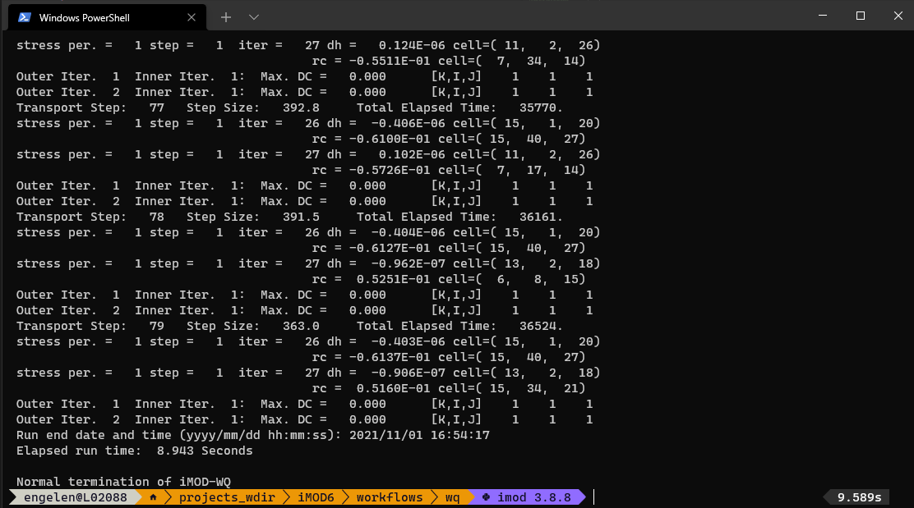

1. A conceptual fresh-salt model¶
In this example we create an example fresh-salt groundwater model of a strip-shaped freshwater lens, which could be a very simple analogue of a barrier island.
The workflow consists of the following steps:
Creating a model with an iMOD-python script
Running the model in a terminal with iMOD-WQ
Use iMOD-python to post-process the model output (IDF) to a data format supported by QGIS (UGRID)
Viewing a cross-section in iMOD QGIS plugin
Use the plugin to view the results in the iMOD 3D viewer
1.1. Creating a model¶
The iMOD-python script below creates a simple 3D iMOD-WQ model.
To install iMOD-python, see these instructions.
We define a middle strip which has fresh recharge (rch) applied, and
the sides have a fixed concentration (bnd = -1)
of 35 (sconc = 35.) in the top layer.
This creates freshwater lens along the strip.
import imod
import numpy as np
import xarray as xr
# Discretization
nrow = 40 # number of rows
ncol = 40 # number of columns
nlay = 15 # number of layers
dz = 10
dx = 250
dy = -dx
x = np.arange(0.5 * dx, dx * ncol, dx)
y = np.arange(-dy * ncol, 0.5 * -dy, dy)
# setup ibound
bnd = xr.DataArray(
data=np.full((nlay, nrow, ncol), 1.0),
coords={
"y": y,
"x": x,
"layer": np.arange(1, 1 + nlay),
"dx": dx,
"dy": dy,
},
dims=("layer", "y", "x"),
)
# set constant heads
bnd[0, :, 0:12] = -1
bnd[0, :, 28:40] = -1
# set up tops and bottoms
top1D = xr.DataArray(
np.arange(nlay * dz, 0.0, -dz), {"layer": np.arange(1, nlay + 1)}, ("layer")
)
top3D = top1D * xr.full_like(bnd, 1.0)
bot = top3D - dz
# Defining the starting concentrations
sconc = xr.DataArray(
data=np.full((nlay, nrow, ncol), 35.0),
coords={
"y": y,
"x": x,
"layer": np.arange(1, nlay + 1),
"dx": dx,
"dy": dy,
},
dims=("layer", "y", "x"),
)
sconc[0, :, 13:27] = 0.0
# Defining the recharge rates
rch_rate = xr.DataArray(
data=np.full((nrow, ncol), 0.0),
coords={"y": y, "x": x, "dx": dx, "dy": dy},
dims=("y", "x"),
)
rch_rate[:, 13:27] = 0.001
rch_conc = xr.full_like(rch_rate, fill_value=0.0)
# Finally, we build the model.
m = imod.wq.SeawatModel("FreshwaterLens")
m["bas"] = imod.wq.BasicFlow(
ibound=bnd, top=top3D.sel(layer=1), bottom=bot, starting_head=0.0
)
m["lpf"] = imod.wq.LayerPropertyFlow(
k_horizontal=10.0, k_vertical=20.0, specific_storage=0.0
)
m["btn"] = imod.wq.BasicTransport(
icbund=bnd, starting_concentration=sconc, porosity=0.35
)
m["adv"] = imod.wq.AdvectionTVD(courant=1.0)
m["dsp"] = imod.wq.Dispersion(longitudinal=0.0, diffusion_coefficient=0.0)
m["vdf"] = imod.wq.VariableDensityFlow(density_concentration_slope=0.71)
m["rch"] = imod.wq.RechargeHighestActive(rate=rch_rate, concentration=0.0)
m["pcg"] = imod.wq.PreconditionedConjugateGradientSolver(
max_iter=150, inner_iter=30, hclose=0.0001, rclose=0.1, relax=0.98, damp=1.0
)
m["gcg"] = imod.wq.GeneralizedConjugateGradientSolver(
max_iter=150,
inner_iter=30,
cclose=1.0e-6,
preconditioner="mic",
lump_dispersion=True,
)
m["oc"] = imod.wq.OutputControl(save_head_idf=True, save_concentration_idf=True)
m.time_discretization(times=["1900-01-01T00:00", "2000-01-01T00:00"])
# Now we write the model, including runfile:
m.write("FreshwaterLens")
# You can run the model using the command prompt and the iMOD-WQ executable
1.2. Running the model¶
This model requires the iMOD-WQ kernel, which is part of iMOD 5 and which you can download for free here after registering. It usually takes only a few minutes before a link is sent.
Open a terminal (cmd.exe is fine, but the cool kids use Powershell) and call the following lines of code:
./path/to/iMOD-WQ.exe ./FreshwaterLens.run
This will run the iMOD-WQ model, and should not take more than 10 seconds.
1.3. Convert output data¶
iMOD-WQ writes IDF files, a data format used in iMOD 5, which not many other software packages support. Therefore iMOD-python allows for reading these IDF files and converting them to other data formats in Python.
In this example we convert the output to a UGRID file, which can be read by QGIS.
import imod
import numpy as np
import xarray as xr
# We assume that this script is located in the same directory
# as in create_wq_input.py.
# We provide a UNIX style global path
# to select all IDF files in the conc directory.
conc_path = "./results/conc/*.IDF"
bottom_path = "./FreshwaterLens/bas/bottom*.idf"
top_path = "./FreshwaterLens/bas/top.idf"
# Open the IDF files.
conc = imod.idf.open(conc_path).compute()
bottom = imod.idf.open(bottom_path).compute()
surface = imod.idf.open(top_path).compute()
# Reconstruct vertical discretization
# We need this as IDFs do not store vertical discretization
surface = surface.assign_coords(layer=1)
## Create 3D array of tops
### Roll bottom one layer downward: the bottom of a layer is top of next layer
top = bottom.roll(layer=1, roll_coords=False)
### Remove layer 1
top = top.sel(layer=slice(2, None))
### Add surface as layer 1
top = xr.concat([surface, top], dim="layer")
### Reorder dimensions
top = top.transpose("layer", "y", "x")
# Merge into dataset
ds = xr.merge([conc, top, bottom])
# Create MDAL supported UGRID
# NOTE: This requires iMOD-python v1.0(?)
ds_ugrid = imod.util.to_ugrid2d(ds)
#%% Due to a bug in MDAL, we have to encode the times as floats
# instead of integers
# until this is fixed: https://github.com/lutraconsulting/MDAL/issues/348
ds_ugrid["time"].encoding["dtype"] = np.float64
ds_ugrid.to_netcdf("./results/output_ugrid.nc")
1.4. Viewing the results in QGIS¶
Start QGIS and open the ./results/output_ugrid.nc file as a mesh.
Fig. 1.4.1 Where to find the action to load a mesh layer¶
You can select the variable to plot on the map canvas by right-clicking the output_ugrid layer in the Layers panel, and then navigating to: Properties > Symbology
Next select which variable to plot in the group selection screen by clicking the color ramp next to the variable name, which will render the variable on the map canvas.
Fig. 1.4.2 Where to find the group selection screen. Here you can select the variables to be plotted. The red circle indicates where the color ramp symbol can be found.¶
Colormaps can be set by navigating to the color selection menu

Fig. 1.4.3 The color selection menu, here you can set the colormap that will be used, as well as adjusting its binning. In these example screenshots we use the colormap “Spectral”.¶
Next, open the iMOD plugin’s cross-section tool  and draw a cross-section by clicking from Map and right-clicking to stop drawing.
Then select conc as variable to be plotted, and click Add.
Next click Plot.
and draw a cross-section by clicking from Map and right-clicking to stop drawing.
Then select conc as variable to be plotted, and click Add.
Next click Plot.
By default the tool will plot with a green to blue gradient called Viridis, but we can change the gradient by clicking the dataset’s gradient box under symbology in the table.
This opens up a color dialog, where we can select the color ramp. Clicking the small arrow next to the color gradient box in the dialog will allow selecting presets. We chose “Spectral” and also select “Invert Color Ramp” in the examples, but you can select whatever colormap you think is suitable!

Fig. 1.4.4 You should see this if you followed precisely what we did.¶
1.5. Viewing the results in the iMOD 3D Viewer¶
As a final step we will look at the results in the iMOD 3D Viewer.
Click the 3D viewer symbol  in QGIS, which will open up the
3D viewer widget of the iMOD plugin.
in QGIS, which will open up the
3D viewer widget of the iMOD plugin.
First, click the Draw Extent button to draw an extent to be plotted. This can be very useful for large datasets, to only look at a smaller zone of the data.
Second, click Start iMOD 3D viewer to start the iMOD 3D viewer. Third, click Load mesh data to load the mesh you selected in the QGIS widget to be opened in the 3D viewer.
Fourth, to plot the data, under the Imported files, expand the data selection tree, and under Layered datasets, selecting conc.
Finally, you can migrate the colormap you used in QGIS by clicking Load legend.
Fig. 1.5.2 If you followed the instructions, you should see this.¶
1.6. Concluding¶
In short, we wrote model input with iMOD-python, ran a model with iMOD-WQ, converted its output to UGRID with iMOD-python, and viewed the results in QGIS and the iMOD 3D viewer.